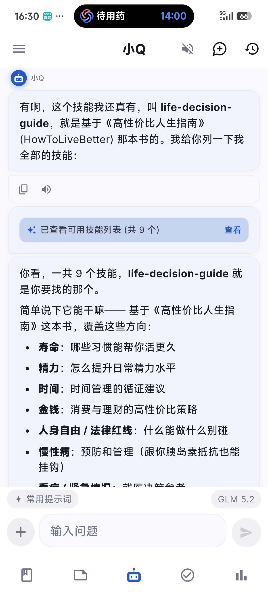
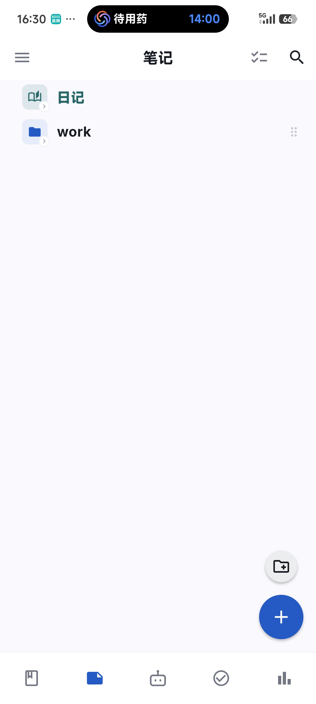
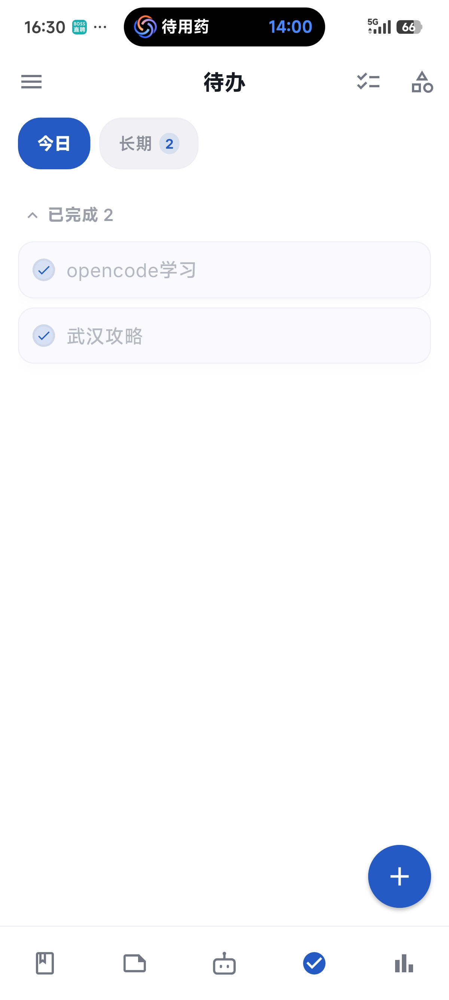
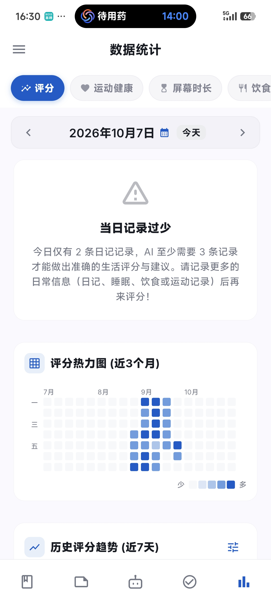

日记、笔记、待办，一天的事都记在一条时间线上。
步数、睡眠、心率、屏幕时间自动同步，不用手抄。
AI 读懂这些数据，给出基于你真实生活的分析与建议。
以下均为 App 真实截图




它不是通用聊天机器人——小Q 能直接读写你的日记、待办和健康数据，回答建立在真实的你之上。
读懂你的生活：睡眠、运动、屏幕时间都在它的上下文里。
9 大内置技能：复盘、记账分析、人生决策指南，说一句就调用。
5 种人设 + 流式语音：管家或伙伴随你选，回答边生成边朗读。
Android 原生桌面小组件，以下为按真实布局 1:1 还原的展示
今日待办
桌面直接勾选，点 + 原地添加
问小Q
一键唤起 AI 对话
快捷记录
文字、拍照、相册，抬手就记